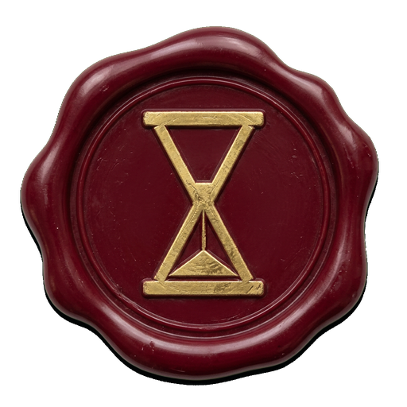

Mapa escatológico bíblico
Velad
Todo lo que la Escritura anuncia sobre el fin, de Génesis a Apocalipsis, en un solo tablero. Profecías, lugares y personajes, capítulo por capítulo y unidos por los hilos que los conectan.
“Velad, pues, porque no sabéis a qué hora ha de venir vuestro Señor.”
Mateo 24:42 · RVR1960